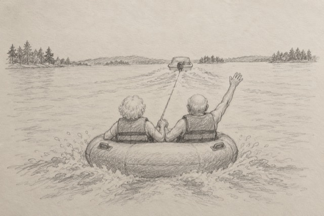

|
In September, two newlyweds went tubing on a lake.
She’s 79. He’s 89.
Their granddaughter put the video on TikTok. It’s been watched 2.6 million times. Their story has been in People magazine and The Washington Post.
Their names are Maureen and Ken.

Maureen wasn’t planning to get in the water. Then she saw how much Ken wanted to go.
She grabbed his hand and said, “Let’s go.”
They went to the back of the boat, cut the line, and said, “We’re next.”
Their granddaughter, Kenzie, says it’s not just the lake. “It’s hard to even get her to answer her phone,” she told People. “They are like teenagers!”
When I read about these two, I tend to think one of two things.
Either whoever was standing in that line is still talking about it.
Or love makes people a little bit bold, at any age.
I’m going with the second. Because it wasn’t always like this for Maureen.
She’d spent seven years on her own. She told People what the evenings were like: “You can keep busy all day, but when evening comes, and you close your door, you are alone, and loneliness sets in.”
Then Ken moved into her building. They ran into each other in the hallway, and he asked her out.
And every Tuesday, he brought her a white rose.
They married on June 20.
Here’s what I keep thinking about. Maureen’s family can hardly get her to pick up the phone.
Most of us are on the other end, waiting for it to ring.
I’ve always believed real love is easy to read. So ask yourself three things about him.
Does he show up without being asked? Ken’s rose came every Tuesday. Small, and steady.
Do you know where you stand without rereading his texts? Maureen says marrying Ken felt like “the most natural thing in the world.”
Would he do something silly with you, just for the fun of it? Ken was 89, and he really wanted a go on that tube.
If you hesitated on even one, that’s what I’d look at with you.
And if there’s no one right now? If nobody’s knocked in a long time? Maureen knows that one too. For her, it was seven years.
Here’s what happens when you click.
1. You type what’s on your mind. Who he is, and which question made you pause. Or that there’s no one yet. A few lines is plenty.
2. I read it. Every word.
3. We look at it together. Where you stand, what’s been in the way, and one small thing to try next.
Evelyn, I’m done guessing. Let’s talk about my love life →
If it’s your first time with me, the first 3 minutes are on the house.
Maureen didn’t wait her turn at the lake. She said, “We’re next.” So can you.
I’m next — chat with Evelyn →
— Evelyn
P.S. Every Tuesday, a white rose. Is he bringing you roses, or keeping you waiting by the phone? Tell me about him. And if no one’s brought you a rose in a long time, tell me that too. Start here.
|